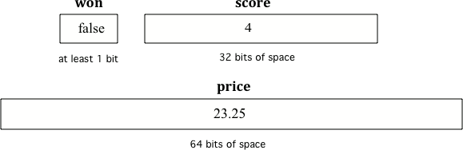

Part 2: Declaring, Assigning, and Naming Variables
To create a variable, you must tell Java its data type and its name.
Creating a variable is also called declaring a variable (声明变量).
The type is a keyword like int, double, or boolean, but you get to make up the name for the variable.
When you create a primitive variable, Java will set aside enough bits in memory for that primitive type and associate that memory location with the name that you used.
Computers store all values using bits (binary digits).
A bit can represent two values, usually 0 or 1.
When you declare a variable, Java needs to know how many bits to use and how to represent the value.

Different types get a different amount of memory space.
To declare a variable, specify the type, leave at least one space, then the name for the variable and end the line with a semicolon ;.
Java uses the keyword int for integer, double for a floating point number, and boolean for a Boolean value.
= sets the valueAfter declaring a variable, you can give it a value using an equals sign = followed by the value.
Or you can set an initial value in the variable declaration:
When printing variables, you can use the string concatenation operator + to add them to another string inside System.out.print.
Never put variables inside quotes "" because that will print out the variable name letter by letter.
You do not want to print out the variable name, but the value of the variable in memory.
If you want spaces between words and variables, you must put the space in the quotes.
activecode:: strConcatDemoTextbook prompt: Run the following code to see what is printed.
Then, change the values and run it again.
Try adding quotes to variables and removing spaces in the print statements to see what happens.
activecode:: strConcatDemopublic class Test2
{
public static void main(String[] args)
{
int score;
score = 0;
System.out.print("The score is ");
System.out.println(score);
double price = 23.25;
System.out.println("The price is " + price);
boolean won = false;
System.out.println(won);
won = true;
System.out.println(won);
String name = "Jose";
System.out.println("Hi " + name);
}
}activecode:: strConcatDemoRunestone expects this starter output from main:
clickablearea:: var_declareTextbook prompt: Click on all of the variable declarations in the following code.
clickablearea:: var_declareVariable declarations start with a type and then a name.
clickablearea:: var_initTextbook prompt: Click on all of the variable initializations, the first time the variable is set to a value.
clickablearea:: var_initVariables are initialized using name = value;.
The equal sign here = does not mean the same as it does in a mathematical equation.
Here it means set the value in the memory location associated with the variable name on the left to a copy of the value on the right.
A variable always has to be on the left side of the =, and a value or expression on the right.
activecode:: asgn_orderTextbook prompt: This assignment statement is in the wrong order. Try to fix it to compile and run.
activecode:: asgn_orderRunestone expects this output from main:
The target assignment has the variable on the left and the value on the right.
fillintheblank:: fillDecVar1Fill in the following:
Prompt: declare age to be an integer and set its value to 5.
Correct response:
fillintheblank:: fillDecVar2, fillDecVar3What type should you use for a shoe size like 8.5?
Correct response:
What type should you use for a number of tickets?
Correct response:
parsonsprob:: declareVars1Textbook prompt: Declare and initialize variables for a number of visits, a person’s temperature, and if the person has insurance or not.
Needed blocks:
parsonsprob:: declareVars1Reject these blocks because Java primitive type keywords are lowercase.
While you can name your variable almost anything, there are some rules.
_.Examples of keywords include for, if, class, static, int, and double.
The name of the variable should describe the data it holds.
A name like score helps make your code easier to read. A name like x is not a good variable name in programming because it gives no clues about what kind of data it holds.
The convention in Java is to start a variable name with a lower case letter and uppercase the first letter of each additional word, for example gameScore.
This is called camel case (驼峰命名).
" ".activecode:: varCaseSensitiveTextbook prompt: Java is case sensitive, so gameScore and gamescore are not the same.
Run and fix the code below to use the right variable name.
activecode:: varCaseSensitiveRunestone expects this output from main:
The variable name must match the declaration exactly.
fillintheblank:: fillName1, fillName2What is the camel case variable name for a variable that represents a shoe size?
What is the camel case variable name for a variable that represents the top score?
=